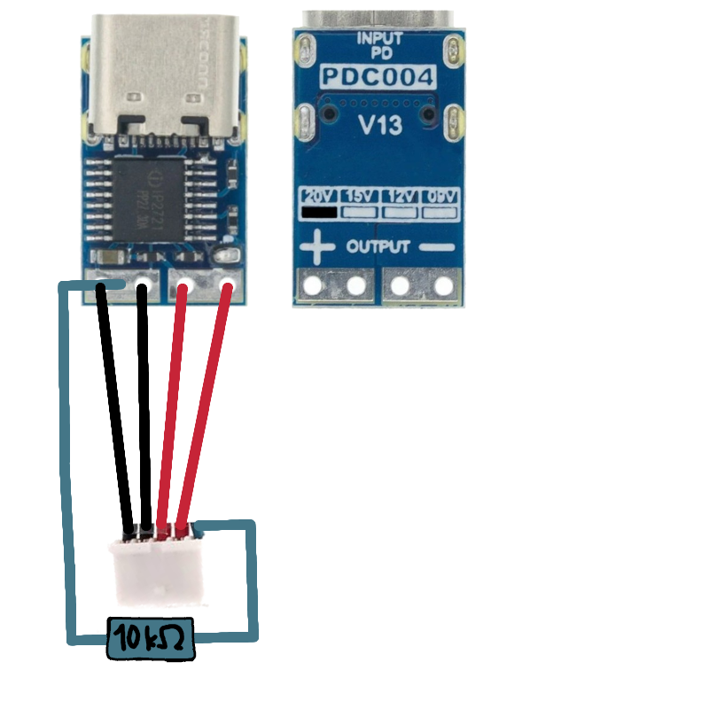
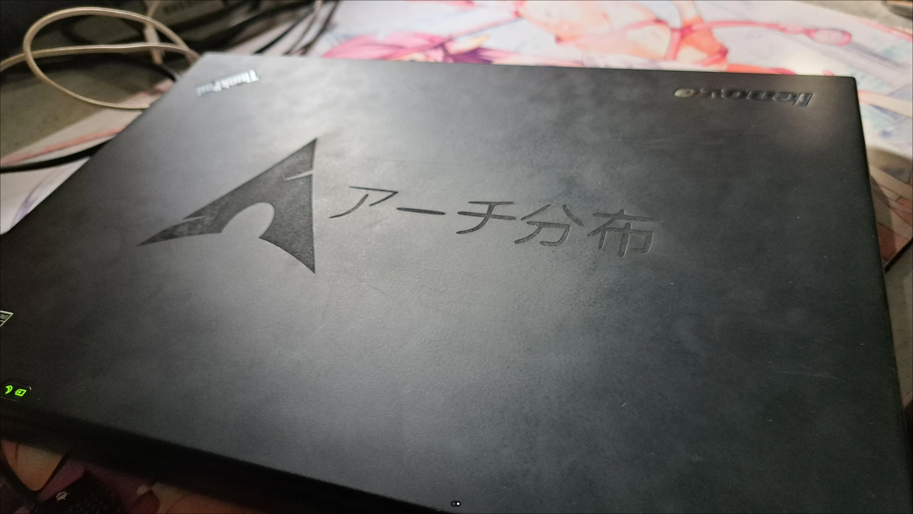
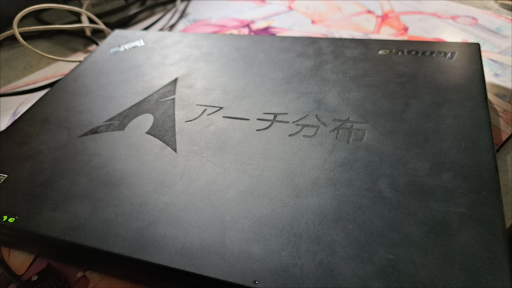

My T430 Upgrades
A guide to modernizing a classic Thinkpad.
Introduction
The ThinkPad T430 is an amazing laptop known for its durability, upgradability, and compatibility with Linux. In this article, I'll discuss the upgrades I have done to bring it into the modern era.
USB-C Charging Port
I wanted an easier way to charge my laptop, so now I only have to carry one charger for all my devices. This mod is surprisingly straightforward.
Required Components:
- USB-C PD Trigger Board (set to 20V 5A)
- Resistor (10kΩ for the T430's 65W requirement)
- A 3D printed case for the PCB (model linked below)
Power Signaling
Based on the table from the ThinkWiki, we need to choose a resistor that signals the correct power rating to the laptop. For the 65W T430, this is 10kΩ.
| Power Rating | Resistance |
|---|---|
| 65 W | 10 kΩ |
| 90 W | Not Connected |
| 135 W | 0 Ω |
| 170 W | 1.5 kΩ |
Wiring & Assembly
The wiring is simple: power to power, ground to ground, and the signal pin connected to ground through the 10kΩ resistor. I used a 3D-printed case which fits the PCB perfectly.
The final result is clean and functional. One potential issue is the length of the PCB interfering with the fan; I solved this by carefully filing down a corner of the board.
Engraved Lid
A permanent and personal alternative to stickers. Using a laser cutter, you can engrave a high-detail design onto the lid. Always test your laser's power settings on a similar surface (e.g. other thinkpad) before engraving your laptop.
 

Backlit Japanese Keyboard
A simple but effective upgrade for both aesthetics and late-night functionality. I found this US-JP layout keyboard with backlighting on eBay.
Slice Battery
For incredible battery life, the slice battery is the ultimate upgrade. My total capacity is now ~125Wh, giving me 14-16 hours of my typical workflow.
- Regular Battery: ~45Wh
- Slice Battery: ~80Wh
- Total Combined: ~125Wh
Here you can see the battery information and the final look with the slice battery attached.